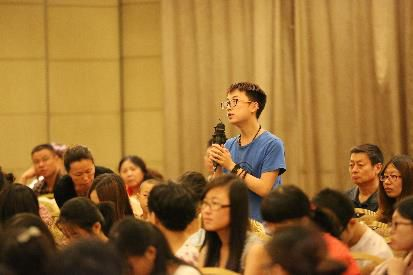
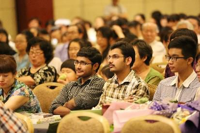

河北医科大学问答
『2014年6月27日』
（一）问：如何把《金刚经》的道理用在治病救人中？
答：《金刚经》宣说的是空性法门，治病救人是世俗的行为，空性与世俗本质上并不矛盾，但表面却看似相违——空性中没有什么可救度的，世俗中却要救护众生。
如果非要把《金刚经》的教义用于医务工作，其实也有甚深的行持方法，这里介绍一种较为易行的方式：《金刚经》是大乘佛教的经典，而大乘佛教的核心思想是无条件地帮助所有众生，而不是只饶益对自己好、对自己有用的人，所以作为医生，不论对待任何病人，亲人抑或怨敌，都能一视同仁地给与帮助，这就是在践行《金刚经》的理念。
现在有个别医生，病人如果跟自己关系好，就多花时间，认真诊治；如果跟自己关系不太好，就随便敷衍，草草了事。这样的做法，不要说大乘佛教，即便用儒家的思想来衡量，也是不合适的。
因此，如果能对所有病人，乃至一切需要帮助的人，无私平等地伸出援助之手，就是在实践大乘佛教的思想。
（二）问：我是药学院的一名学生。我听课时总不自觉溜号，请问有没有方法让心专注？
答：人的专注力是需要培养的。
一方面，作为老师，传讲任何一门课之前，都要对学生提出专注听讲的要求。这是一种很好的督促。
我所在的佛学院里，对于听法有严格的规范，所以在一节课的一两个小时内，大家都会全神贯注地听闻、记录，很多人连坐姿都不会改变。我的一个老师，已经八十多岁了，他有时上午持续讲四小时的课，而且对听者要求严格，甚至不允许中途上厕所，即使是这样，大家的听课状态也很不错。
美国学校里的有些老师对待学生也非常严格，要求他们上课时必须专注在课堂内容上，不允许东张西望，更不能东倒西歪或者打瞌睡、打哈欠等等。
所以，老师的约束对于学生集中精力能起到一定作用。
不过，现在有些老师的授课流于表面、平淡无奇，这种情况下要听者始终专心致志，也有一定困难。这可能跟这个时代也有关系，现在的时代被称为“不思时代”——大家普遍不愿深入思考，很多人就喜欢看看微博。可是140个字能说明多少道理？所以，听课不专注，可能是时代给人造成的不良影响，也可能跟老师的个人风格有关。
另一方面，作为学生，需要树立正确的学习态度，无论听任何课或讲座，都应当认真对待，尽量从头到尾作笔记，积极地思维。
我本人不论听任何课，佛教或非佛教的，都会想：“既然已经参加，就好好地听，认真记笔记。即使这个课跟我的专业不一定相关，但讲者是把自己思考过的内容拿来跟大家交流，肯定有一些价值。”
因此，要保证上课精力集中，一方面，老师的督促有一定作用；另一方面，学生自己要树立认真的学习态度。
（三）问：有一名医生因过失导致病人死亡，不过他的初心是好的，请问他需要承受严重的报应吗？
答：在这个问题上，佛教的观点跟世间法律有些类似。
世间法律规定，在并非故意的情况下因过失致人死亡，可以从轻处罚。同样，佛教把罪业分为四种：作已积集、作已未积、积而未作、未作未积。其中的“作已未积”罪，是指虽然造作了恶业，但过失不是很严重，罪业不会增长，比如无意中伤害了别人。你说的那名医生的行为就属于“作已未积”罪，虽然有一些过失，但并不会有特别严重的报应。
不过，即便是这样，他本人也要尽量忏悔，让这个罪业清净。
（四）问：我们年轻人的压力和痛苦其实蛮多的，在看到周围的同学陷入痛苦时，是马上用佛法开导他？还是不能操之过急，以免他接受不了？
答：我虽然不是你们的同龄人，但也处在这个时代，我好像觉得压力不大、痛苦也不多，还是比较快乐的。
实际上，痛苦与否关键在于内心，如果我们没有过多的虚荣心、攀比心、奢求心，很多痛苦都会自然消失。
在如今的时代，大多数人不愁吃、不愁穿，不要总是口口声声地说“好苦啊，压力好大”。我前段时间去青岛的一个监狱，看到那里的犯人，当时就在心里感慨：“我还是很幸运的，有自由的空间，可以晒晒太阳、喝喝茶，想休息就可以睡一会儿。”所以，不要总是用悲观的语言暗示自己。
至于是否一开始就用佛法安慰痛苦之人，作为医学院的学生最擅长做实验，在这种事情上，你也不妨做个试验。如果试验成功，就继续给他讲佛法，如果不成功，那就暂时换用其他方法。
（五）问：我是学法医的，将来参加工作肯定会看到很多死亡的景象，如何以正确的心态面对？
答：其实不仅是你，医学类专业的学生走上岗位时，都要面对很多生命的逝去，尤其在中国，癌症患者位居世界第一，而有些报道中说癌症的死亡率比20年前增长了29.4%，差不多四个死亡的人中就有一个死于癌症。
作为医生，看到病人死去时，要避免两个极端心态：一个是内心麻木，有些人的心如同石头一般，面对任何事都无动于衷，甚至身边的至亲离开也毫不痛心，这是很不应该的；另一个是过于悲伤，面对病人的死亡，医生也不能特别伤心欲绝。我曾经看到一个报道：一个病人死了，旁边的医生非常悲痛，无法抑制地哭着。如果这样，医生也容易患上心脏病等疾病。
另一方面，他人的离去，是在向我们宣说无常的道理。如果能明白这个道理，面对痛苦时，内心就不会那么脆弱。
我经常想：现在很多自杀的大学生、老师、医生等各种身份的人，如果明白佛教所讲的“聚际必散，积际必尽，生际必死，高际必堕”，绝对不会走上这条绝路，因为即便陷入人生的低谷，也会想：“噢，一切都是无常的，我遭遇变故也是正常现象。”如此一来，自然会有力量面对。
所以，我希望大家能多了解一些佛教道理，这对你的人生很有帮助。
尤其是个别学生和老师，不能把佛教当作迷信而报以轻视的目光。事实上可以毫不夸张地说，佛教是人类崇高智慧的结晶，揭示了宇宙人生的奥秘，对于每个人都有巨大的利益——一旦明白其中的很多道理，内心会变得强大。一个人如果内心强大，那么任何困境现前，都可以应对自如；相反，如果内心脆弱，那么即使拥有钱财、地位等外在事物，仍然会不可避免地陷入痛苦。而作为医务工作者，尤其要有一颗强大的心，所以，大家很有必要从佛法中汲取力量。
（六）问：作为医学院的学生，难免会用动物做实验。对此我常常很矛盾：一方面处死动物时，自己也很伤心；另一方面如果不参加实验，可能拿不到毕业证；再者，又觉得如果没有这些动物的牺牲，医学技术也许就难以快速发展，由此也就无法拯救更多人。那么动物实验到底合不合理呢？
答：用动物做实验是非常残忍的，因为动物的生命与人的生命没有高低之别，是完全平等的——人爱惜自己的生命，动物也贪生怕死；人有疼痛的感受，动物也不例外。
其实这类实验在人类身上也出现过，像日本731部队所做的人体实验，他们这样做时也声称是为了医学的发展，再比如西方历史上曾用黑人做实验。这些实验因为发生在人类身上，大家都觉得非常可怕，实际认真观察起来，用动物做实验也与此一样残忍。
但遗憾的是，一些学校或科研机构似乎无法避免动物实验，因为如果不做这些实验，相关的学习与科研就无法开展，甚至很多学生可能拿不到毕业证。在这种情况下，只有对被害的动物心怀愧疚，多作一些忏悔。
另外，也并非所有医学研究都使用动物做实验，动物实验大多出现在西医中，而中医和藏医并不会伤害动物——中医认为伤害动物是不好的行为，唐代的孙思邈曾说：“杀生求生，去生更远。”意思是，想通过杀生求得延年益寿，只会适得其反；藏医的观点也与此类似。
所以，如果可能的话，不做动物实验是最好的；如果实在无法避免，就只能尽力忏悔，并且念观音心咒回向给被害的动物。
（七）问：在我遇到困难时，有人帮了我，我很想回报他，但又没有能力。遇到这种情形，该怎么办？
答：生活中，我们每个人肯定得受过很多人的帮助，比如生病时，有些医生对我们很关心，给与了帮助与救治。虽然我们有时无法立即回报他们，但要有“滴水之恩，涌泉相报”的观念，不能忘记这份恩德，这是智者的选择。只要记住这份恩情，在漫长的人生中，有一天也许就有机会报答他们。

（八）问：我是临床学院的一名学生。我最近看到一个报道说，有个人是依靠社会救济长大的，他长大后就发愿要报答社会，把工资基本都捐给了社会，捐给了贫苦孩子。但是他从没有给自己的女朋友买过东西，除了一对发卡。而这对发卡还是由于他看到路边卖发卡的老太太很可怜，才买了送给女朋友的。这给他的女朋友造成了困扰，导致两人之间产生矛盾。
像这样对别人有利却对亲人有害的做法，是善还是恶呢？
答：人与人的感情问题是比较微妙的，一方的话语只是一面之词，所以没有听到双方的说法之前，很难判断事情的真相。
而且每个人的价值观有所不同，我们拿自己的标准来衡量别人的行为，结论也可能会有失偏颇。如果有机会采访一下那个男孩，也许他会说出比较特殊的价值观念。
再者，世人常说：可怜之人必有可恨之处，可恨之人必有可悲之苦。所以完全把某个人定性在可恨或可怜、善或恶上，也不尽合理。
旁观者有时对问题的评判不一定全面，因此可能还要静下来思考，进一步地深入调查。
（九）问：如何才能让内心强大？
答：想要内心变得强大，主要可以从几方面入手：
一是培养利他心。
很多人之所以内心脆弱，究其根源就是太自私了。其实人的痛苦都是由呵护自我而生，这一点看看每个人流过的眼泪就明白——这些眼泪有多少是为自己、有多少是为别人？显而易见，很多眼泪都是为自己而流的。
因此，我们如果能常常为别人着想，乐意帮助别人，内心就会变得强大，因为有利他心的人，即使自己生活得非常简单，也会快乐。
二是保持内心宁静。
人的内心不要被贪嗔等情绪所左右，而要常常保持宁静。如何做到这一点呢？可以早上起床后禅修一会儿，让心静下来，晚上睡前也这样做，并且经常反观自己的心。这样内心就会逐渐获得一种力量，而且这种力量不容易被外缘或困境所摧毁。
也就是说，首先要培养一颗利他心，同时要保持宁静的心态，这是让内心强大的很好方法。
另外，还应当保持求知心。
一个人如果有很强的求知欲，那么不论生活中出现什么困难，都不会对他造成大的冲击，因为他会觉得：不管怎样，有生之年我要不断学习，这是人生中最有意义的事。一旦有了这种观念，其他都变得不那么重要。
所以，如果具有利他、宁静、求知这三种素质，内心就会摆脱脆弱，逐渐强大起来。而拥有一颗强大之心的价值，是金钱无法衡量的。
（十）问：佛经中说大悲咒可以治愈一切病，是这样吗？
答：一些佛经中虽然有这种说法，但对于其中的“一切”，要善加理解。
比如开会时，我们说“所有人都到了”，那是不是全世界的人都到了？不是的，只是当时该到的人已经到了。同样，佛经上说大悲咒可以治愈一切疾病，也是把某个范围内的病称为“一切”。
佛经里的“一切”“所有”等词语，有时是指全部，有时则不一定。因为佛经的语言，有时是直接的字面意思，有时则有间接的内涵，有时还有更深的密意，所以不能一概从字面上理解。这个道理，你们学医的人应该很容易明白，因为很多医学术语在不同场合，也有不同的含义。
当然，如果对大悲咒有很强的信心，或者自己有很好的禅定力，那么念诵大悲咒的力量也是不可思议的。
（十一）问：如今中西医有时相互排斥，您如何看待这个问题？
答：这样并不好，双方应以互相包容、互相学习的心态相处。
其实，中医与西医各有优点——中医的优点，诸如天人合一的思想、对气脉明点的细致观察，以及对有些慢性病的调治；西医的优点，比如要切除一些病灶时，依靠中医很难办到，但依靠西医的手术就可以轻松解决。
不过在查找病因上，中医较之西医可能更具有方便。西医一般是借助电子仪器来检测，比如通过验血来检查病原，如果依靠这种方式查不出病因，就无从入手治疗；而中医可以使用很多缘起的方法来观察病因。
所以我想，对付一些急性病以及有些特殊的病，西医的疗效会比较迅速；但是中医有着悠久的历史，对病因的研究比较深入，又有丰富的草药学，可能在根治病源上更有优势。
作为医生，最好既掌握西医又通晓中医，同时以自己的专业为主，另一者为辅。
我认识的有些医生，所学专业虽然是西医，但对于中医也非常熟悉，如果有些疾病依靠西医治不好，就改用中医的方法，而如果中医不太奏效时，又会结合西医的方法。我觉得这样很完美，否则，人类的疾病千奇百怪，可能是内、外、密各种病因交织而成，仅仅依靠单一的疗法，效果不一定好。
（十二）问：我是一名护士，在看护患者的过程中，患者家属常常期望很高，提出过分的要求。虽然我已经竭力帮助他们，但依然无法令他们满意。面对这种情况，该怎么办？

答：不论医生还是护士，要做好医务工作，首先需要一颗善良的心，这是最重要的，其次还要有良好的人格，以及对专业知识的精通。除此三者之外，还需要什么呢？就是善巧方便，医务工作者要接触很多人，所以要处理好各种关系。
首先，面对一起共事的人，不论领导还是同事，凡是自己工作圈里的人，都要跟他们和睦相处，否则即使你的医术很好，在工作中恐怕也只会处处碰壁。
第二，对待病人要有平等心。作为医务工作者，要对所有病人一视同仁，不能因为有些病人有钱有权或者跟自己关系好就刮目相看，有些病人贫穷卑微或者对自己没什么利益就不屑一顾。
再者，应该运用智慧观察病人家属。有的病人家属非常挑剔，甚至提出无理要求，这时不论医生还是护士，言谈举止中要具有智慧，这样才可能妥善处理他们的问题，如果有些实在无法解决，只要自己问心无愧也没有大碍。
你所说的情形，不仅医务人员会遇到，从事其他行业也会遇到不可理喻的人，他们出于各种目的而提出过分的要求。面对这种情况，就需要善巧应对。听说现在有些医生跟病人以及病人家属谈话时都会录音，以备日后出现争端，虽然这跟信任危机的大环境不无关系，但是也没办法。
不过，即使遇到极少数人的非理刁难，你也不要对这个职业失去信心，不要对所有病人及其家属失去信任，毕竟他们中百分之七八十都是很好的，会理解你的工作。而且站在另一个角度看，个别人的吹毛求疵对你也是一种提醒和督促。
我就经常这样想：最好有人给我的工作提意见，这样我就会提高警惕，工作质量得以提升；如果人人都赞叹我、讨好我，那可能只会助长我的傲慢，导致我放松警觉，做事粗心大意。
所以，生活中的磨难，恰恰为我们铺平了未来的道路。
（十三）问：工作中看到一些不良现象，该如何对待？
答：现在不论哪个行业中，都有让人看不惯、不满意的现象。对此，我觉得要分两种情况。
一种情况，所谓“不良现象”其实是自己眼睛不清净所致。我们的眼睛往往观察别人的过失非常敏锐，“这个不对，那个有错”，如果是这样，就要知道是自己的过错，不应当责备别人。
另一种情况，的确是你所见到的现象不太合理。这时看你是否方便说出来，如果不方便，那只有自己默默忏悔，因为既然你还要在这里工作，那么为了自己的生存，为了集体的利益，可能不得不选择沉默，同时内心惭愧忏悔。
（十四）问：您提及自己看病时发现有些医生对您的病情不重视，敷衍了事，此时您也会忿忿不平吗？您是如何处理这件事的？
答：面对这种事情，我虽然有些不满，但也并没有怨声载道，或者跟医生发生争吵，而是旁敲侧击地对医生说：“我已经住院很多天了，你对这个检查资料应该熟悉吧？”虽然语气委婉，但是也明确地让医生知道他确实有些失职。当然，像这种医生是极少的。
我特别希望今天在座的医生、护士以及将来会从事医务工作的同学们，对病人怀有一颗慈悲心。虽然在座的人数量有限，能力也有限，但是涓涓细流可以汇成大海，大家的慈悲心逐渐凝聚就会形成一股强大的力量，这个力量是这个社会所需要的。
其实在座的都很有善根，也颇具善心，只不过这种善根与善心很容易被外境染污、侵蚀，所以要懂得用各种方法进行保护。
总之，如果能够尽心尽力地奉献医疗事业，致力于治病救人，这样的人生是非常有意义的。
（十五）问：如今的社会中，人的道德越来越沦丧，诸如第三者插足的现象屡见不鲜，以至于很多在校学生对待男女之事也比较草率。您如何看待这种现象？
答：生而为人，需要具备道德的底线、做人的准则，因为不论你的身份如何，是学生、老师还是医生，如果没有清净的心地和贤善的行为，那么求学或是工作都难以成功。
我们的社会受西方一些思想的冲击，人心不像以前那样传统与洁净，但不管怎样，每个人对自己要有一种道德约束，这样才能营造美好的人生。
作为学生，尤其要把精力投注在学习上。大学时光非常宝贵，在此期间，谈恋爱不重要，赚大钱不重要，穿名牌不重要，坐豪车也不重要……如果你读大学时看重这些，说明你心中不该成熟的已经成熟了，而该成熟的知识还看不到踪影。这样的结果就是毕业时除了一份没有分量的文凭外一无所得，那美好生活的梦想也就变得遥不可及。
总之，不论外在环境怎样，每个学生都应对自己负责。而对自己负责的表现之一，就是保持清净的生活。
（十六）问：我正在学习《入行论》，能否请您就利他心作一些开示？
答：利他心，对于学佛或不学佛的人，都非常值得了解。
听说有的老师也在这方面从正反两面教导学生：“有些心念是积极的，比如决心、正知心，乃至利他心；有些心态则是负面的，比如贪心、嗔心、嫉妒心。”这是一种非常好的教育，对于学生的未来帮助很大，因为这不是仅仅传授学生一些知识技能，更是给学生的人生路点燃了一盏明灯。
我常常想：在此世间，只要有利他心，不论什么身份的人，都会非常成功；而如果没有利他心，不论你是学生、老师或者出家人，都不会有真正的成就。
利他心不仅对个人非常重要，对整个社会也不可缺少。如果人人都有利他心，整个社会就会很温暖，充满光明；相反，如果人人都很自私，这个社会就会越来越冰冷，失去希望。
因此，通过学习《入行论》等大乘论典提升利他心，非常有意义。
希望大家都能重视培养利他心，虽然现在你不一定懂得它的价值，但迟早会发现它有多么珍贵。
（十七）问：我是一名医疗工作者，刚刚工作一年，从学生到社会的转变让我很不适应。有一些东西我想坚持，但总会听到很多声音告诉我“不必这样做，因为在这个社会不适应”，久而久之，再遇到一些事情时，我都不知如何是好了，希望您给予指点。
答：确实，大学毕业后的前两三年，对于很多人非常艰难，因为是人生的转型期。
学生时代时，生活环境很单纯、很清净，现在突然置身于错综复杂、甚至有些污浊的环境中；学生时代时，自己孑然一身，现在可能有了家庭，肩上的担子一下重了；学生时代时，只要求学就可以，现在要学以致用，在实践中运用学到的知识。这种种变化，让很多人措手不及，迷茫与困惑也不期而至。
有些学生临近毕业时，兴高采烈地欢呼：“我要毕业了，太开心了！”但是我很想告诫他们：一定要做好心理准备，否则可能会“水土不服”。
当然，到了社会上，经过三五年的磨砺，转型期的阴霾会慢慢消散，很多人的人生方向基本确定了。不过八年、十年后，也许另一个转型期又会到来，此时刚毕业时的很多兴趣淡化了，新的希求萌生出来。
如何顺利度过人生的转型期呢？有几个要点是需要把握的：
第一，保持纯洁的善心。第二，拥有坚定的决心。
有时我们感觉自己的人生似乎已经山穷水尽、走投无路，但实际上也并非如此，人生的路是四通八达的，可能不经意间就会柳暗花明。因此，很多大学生步入社会后，当初的美好愿望也许没能实现，甚至周围的人暗暗提示你放弃初衷，但只要你发心是善的，就一直坚持下去，总有一天这份善良会散发光芒。
第三，人格要沉稳，时时运用智慧去观察，而不要随波逐流。
在漫长的人生路上，保持稳重的心态很重要。遇到快乐之事，不要过于骄慢或欢喜；遇到逆境或迷惑，也不要过于灰心失望，始终以一种积极、平稳的心态向前迈步，那么人生的路会很好地走下去。
第四，所作所为始终为他人着想。
当然，毫不利己、专门利人，一般人很难做到，但还是要为他人有所考虑，这样很多事会比较容易成办。
人生就是一个不断面对问题、处理问题、解决问题的过程，没有人能够不经历坎坷而顺利走过一生，不论在过去、现在还是未来。而所谓的痛苦与迷茫，往往只是自己没有想开而已，一旦想开了，问题就荡然无存了。
实际上，只要有一颗善良的心，什么都过得去，随缘就好。
主持人：
谢谢堪布！今晚通过堪布的演讲以及答疑，相信大家当初从医的那份决心更加坚定了，对人生有了更大的感悟，让我们再次用热烈的掌声感谢堪布！